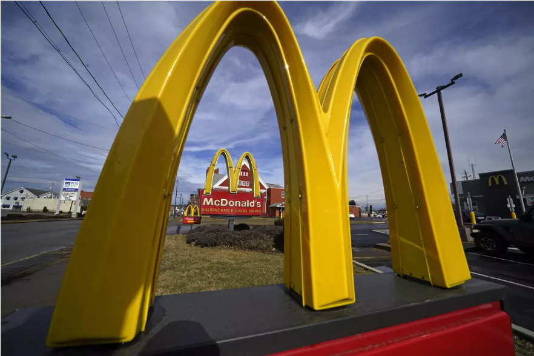
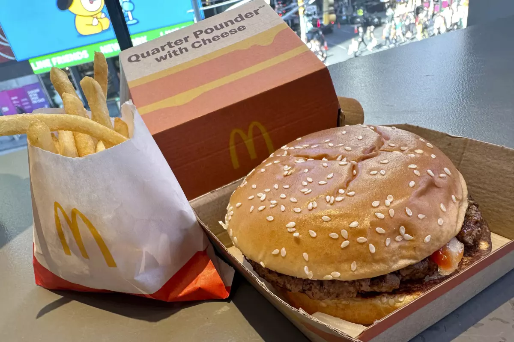

|  | Problema del brote E-Coli en USA |
d | ||
McDonalds onion problemLos funcionarios han dicho que cebollas crudas fileteadas en las hamburguesas cuarto de libra (Quarter Pounder) de McDonald 's son la fuente probable de la intoxicación con la bacteria E. coli. McDonald 's indicó que las cebollas provenían de un único proveedor, Taylor Farms, con sede en California. |
 | |||
Pagina de McDonalds creada por Felipe Echeverria UY015 0011 |
||||